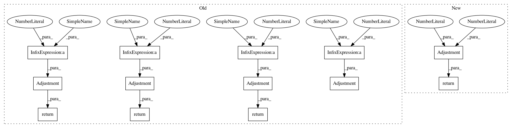

2d25432a9c95f288997fb9a4d9009fdf18cd1acd,w3af/core/controllers/core_helpers/status.py,CoreStatus,get_grep_adjustment_ratio,#CoreStatus#,654
Before Change
// higher, thus it is harder to calculate the ETA.
//
if not self.has_finished_crawl() and not self.has_finished_audit():
return Adjustment(unknown=GREP_DEFAULT_UNKNOWN_ADJUSTMENT_RATIO * 1.5)
//
// During the early phases of the scan it is easy to believe that the
// scan will finish soon (not many items in the queue). To prevent
// this we set a big adjustment ratio
//
if run_time < 30:
return Adjustment(unknown=GREP_DEFAULT_UNKNOWN_ADJUSTMENT_RATIO * 20)
if run_time < 60:
return Adjustment(unknown=GREP_DEFAULT_UNKNOWN_ADJUSTMENT_RATIO * 10)
if run_time < 120:
return Adjustment(unknown=GREP_DEFAULT_UNKNOWN_ADJUSTMENT_RATIO * 7.5)
if run_time < 180:
return Adjustment(unknown=GREP_DEFAULT_UNKNOWN_ADJUSTMENT_RATIO * 3.5)
return Adjustment(unknown=GREP_DEFAULT_UNKNOWN_ADJUSTMENT_RATIO)
def log_eta(self, msg):
After Change
return Adjustment(known=1, unknown=50)
if run_time < 60:
return Adjustment(known=1, unknown=35)
if run_time < 120:
return Adjustment(known=1, unknown=20)
In pattern: SUPERPATTERN
Frequency: 3
Non-data size: 13
Instances
Project Name: andresriancho/w3af
Commit Name: 2d25432a9c95f288997fb9a4d9009fdf18cd1acd
Time: 2018-07-23
Author: andres.riancho@gmail.com
File Name: w3af/core/controllers/core_helpers/status.py
Class Name: CoreStatus
Method Name: get_grep_adjustment_ratio
Project Name: andresriancho/w3af
Commit Name: 2d25432a9c95f288997fb9a4d9009fdf18cd1acd
Time: 2018-07-23
Author: andres.riancho@gmail.com
File Name: w3af/core/controllers/core_helpers/status.py
Class Name: CoreStatus
Method Name: get_grep_adjustment_ratio
Project Name: andresriancho/w3af
Commit Name: 2d25432a9c95f288997fb9a4d9009fdf18cd1acd
Time: 2018-07-23
Author: andres.riancho@gmail.com
File Name: w3af/core/controllers/core_helpers/status.py
Class Name: CoreStatus
Method Name: get_audit_adjustment_ratio
Project Name: andresriancho/w3af
Commit Name: 2d25432a9c95f288997fb9a4d9009fdf18cd1acd
Time: 2018-07-23
Author: andres.riancho@gmail.com
File Name: w3af/core/controllers/core_helpers/status.py
Class Name: CoreStatus
Method Name: get_crawl_adjustment_ratio